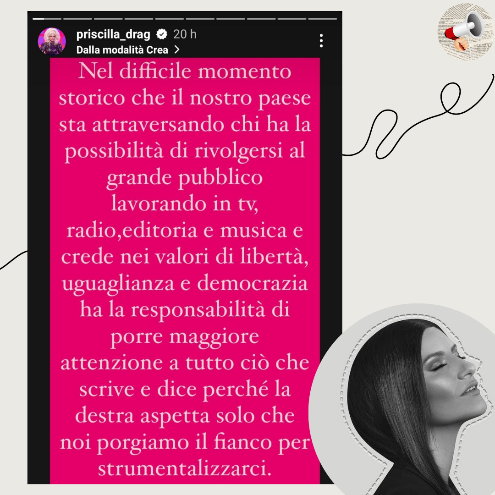

Riprendo le parole di @priscilla_drag per i
miei 2cent sulla questione Pausini.
Per non ritrovarsi in nessun modo nel dibattito pre-elezioni si è beccata i complimenti di Salvini,
rientrando comunque nel dibattito, e chi mi conosce sa il DOLOOORE immenso provato, non essendo di certo simpatizzante del caro Matteo per usare un
eufemismo. Ascolto la sua musica da quando ho memoria e non sto qui a pormi il minimo dubbio, questo episodio non mi farà cambiare idea su di lei, perché appunto seguendola so l'esempio che da e di quante volte non si sia tirata indietro a
costo di risultare impopolare. L'amore incondizionato che provo non mi impedisce di essere obiettiva e dire quello che penso: io l'avrei cantata a squarciagola.
Perché si, è una canzone politica, ma non solo di sinistra o almeno così dovrebbe essere in un Paese normale, è simbolo dell'Italia Libera
che abbiamo oggi. Ho capito le intenzioni ma molte volte le intenzioni non bastano. E mi permetto di aggiungere, a volte
farsi addirittura odiare da una fetta di pubblico può essere giusto, soprattutto in un momento delicato come quello che stiamo
attraversando e attraverseremo, perché ritrovarmi ad un concerto mentre ascolto "il nostro amore
quotidiano" o altre mille canzoni con un messaggio chiaramente in contrasto con la politica di dx, a fianco ad una persona che ha
votato Meloni, per citarne una, beh... forse mi piacerebbe non averla certa gente al concerto. Stavolta ha sbagliato, servirà da lezione, ed è servito a
ricordare che Bella ciao non è la colonna sonora della "casa di carta" amici spagnoli, è molto di più. 🌹